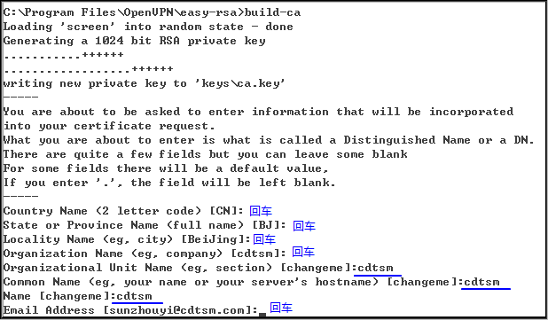
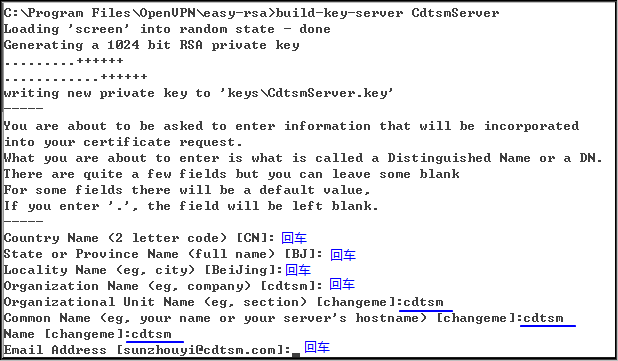
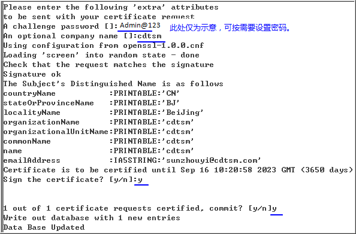
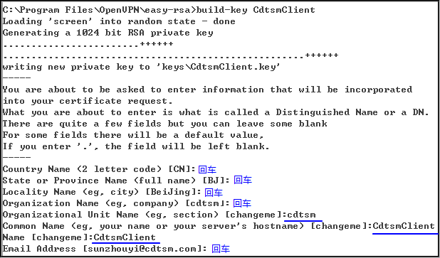
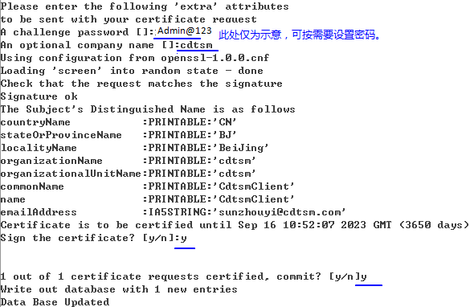

操作场景
OpenVPN的安装及配置包括在服务端和客户端分别进行。OpenVPN的服务端，一般为用户提供的一台虚拟机或者物理机，在本例中称为“服务端S”。 OpenVPN的客户端，一般为管理员用于接入FusionManager的笔记本或者个人电脑，在本例中称为“客户端C”。
本文以提供OpenVPN软件安装在Windows类型操作系统为例，介绍如何安装及配置VPN软件。
不同版本的OpenVPN软件安装配置过程会有微小差异，本文以“2.2.1”版本为例进行说明。
前提条件
- VPN服务端物理部署：
已准备有一台双网卡的物理机，其中网卡1接入到管理网络中，网卡2接入到办公网络中。
- VPN服务端虚拟化部署：
- 已在空闲的虚拟化集群上创建一个有双网卡的虚拟机，虚拟机的网卡1接入到管理网络中，虚拟机的网卡2接入到办公网络中。此虚拟机建议优先创建在业务集群，在业务集群没有资源时，选择管理集群创建。
- 已在虚拟化环境中创建好办公网络。
- 虚拟机的规格满足需要安装的操作系统的推荐配置。
操作步骤
- 登录OpenVPN官方网站：http://openvpn.net/，下载“openvpn-2.2.1-install.exe”软件。
- 双击“openvpn-2.1.1-install.exe”，根据提示使用默认路径安装OpenVPN软件。
- 检查服务端S和客户端C上是否增加了一个本地连接？
- 打开服务端S和客户端C的“C:\Program Files\OpenVPN\bin”目录，运行“addtap.bat”。
添加一个虚拟网卡。
- 打开服务端S的“C:\Program Files\OpenVPN\easy-rsa”目录。
- 使用写字板打开“vars.bat.sample”文件。
- 将光标移动到文件下方，修改以下字段。
set KEY_COUNTRY=CN
set KEY_PROVINCE=BJ
set KEY_CITY=BeiJing
set KEY_ORG=cdtsm
set KEY_EMAIL=sunzhouyi@cdtsm.com
- 保存文件并将文件名修改为“vars.bat”。
- 在服务端S的操作系统中，在中输入“cmd”，单击“Enter”。
弹出cmd命令提示符界面。
- 在cmd命令提示符界面，执行如下命令，进入“easy-rsa”路径。
cd "\Program Files\OpenVPN\easy-rsa"
- 执行以下命令。
vars
- 执行以下命令。
clean-all
回显如下所示，表示执行成功。
系统找不到指定的文件。 已复制 1 个文件。 已复制 1 个文件。
- 执行以下命令。
vars
- 执行以下命令，生成根CA。
build-ca
- 按照下图完成配置。
图2 生成根CA配置
 - 执行以下命令。
vars
- 执行以下命令，生成“dh1024.pem”文件。
build-dh
回显如下信息，表示生成文件成功。
Loading 'screen' into random state - done Generating DH parameters, 1024 bit long safe prime, generator 2 This is going to take a long time ...........+...............+......................+.....+.......... ......................................................+*++*++
- 执行以下命令。
vars
- 执行以下命令，生成服务器端证书。
build-key-server CdtsmServer
- 按照下图完成基本配置。
图3 基本配置
 - 按照下图配置密码等其他信息。
配置完成后，服务端使用的证书生成完成。
图4 其他配置信息
 - 执行以下命令。
vars
- 执行以下命令，生成客户端证书。
build-key CdtsmClient
- 按照下图完成基本配置。
图5 基本配置
 - 按照下图配置密码等其他信息。
配置完成后，客户端使用的证书生成完成。
图6 其他配置信息
 - 执行以下命令，生成ta.key文件。
openvpn --genkey --secret keys/ta.Key
回显如下信息，表示生成成功。
C:\Program Files\OpenVPN\easy-rsa>
- 打开服务端S的“C:\Program Files\OpenVPN\sample-config”目录。
- 使用写字板打开“server.ovpn”文件。
- 移动光标到“port”设置处，设置使用的端口值。
使用的默认端口值为1194。
# Which TCP/UDP port should OpenVPN listen on？
# If you want to run multiple OpenVPN instances
# on the same machine, use a different port
# number for each one. You will need to
# open up this port on your firewall.
port 1194
- 设置使用的协议。
默认使用UDP协议，如果使用HTTP proxy，将使用的协议修改为TCP。
# TCP or UDP server？
;proto tcp
proto udp
- 设置使用的设备。
tap是二层设备，支持链路层协议,tun是ip层的点对点协议，可根据需要设置。
...
# the firewall for the TUN/TAP interface.
;dev tap
dev tun
- 将生成的根CA写入服务端的配置文件中。
# Any X509 key management system can be used.
# OpenVPN can also use a PKCS #12 formatted key file
# (see "pkcs12" directive in man page).
ca ca.crt
cert server.crt
key CdtsmServer.key # This file should be kept secret
- 将生成的dh1024.pem文件写入服务端的配置文件中。
# Diffie hellman parameters.
# Generate your own with:
# openssl dhparam -out dh1024.pem 1024
# Substitute 2048 for 1024 if you are using
# 2048 bit keys.
dh dh1024.pem
- 根据实际网络环境设置OpenVPN服务器内网IP和子网掩码。
# Configure server mode and supply a VPN subnet
# for OpenVPN to draw client addresses from.
# The server will take 192.168.0.1 for itself,
# the rest will be made available to clients.
# Each client will be able to reach the server
# on 192.168.0.1. Comment this line out if you are
# ethernet bridging. See the man page for more info.
server 192.168.0.0 255.255.255.0
- 根据实际网络环境添加路由。
把添加的路由发送给客户端，客户连接成功后自动加入路由表。
# EXAMPLE: Suppose the client
# having the certificate common name "Thelonious"
# also has a small subnet behind his connecting
# machine, such as 192.168.40.128/255.255.255.248.
# First, uncomment out these lines:
client-config-dir ccd
push "route 192.168.3.0 255.255.255.0"
push "route 192.168.22.0 255.255.255.0"
- 根据实际网络环境向客户端发送DNS。
# Certain Windows-specific network settings
# can be pushed to clients, such as DNS
# or WINS server addresses. CAVEAT:
# http://openvpn.net/faq.html#dhcpcaveats
# The addresses below refer to the public
# DNS servers provided by opendns.com.
push "dhcp-option DNS 192.168.22.243"
push "dhcp-option WINS 192.168.0.20"
- 设置转发方式。
可以让VPN客户端之间相互访问直接通过OpenVPN程序转发，不用发送到tun或者tap设备后重新转发，优化Client to Client的访问效率。
# Uncomment this directive to allow different
# clients to be able to "see" each other.
# By default, clients will only see the server.
# To force clients to only see the server, you
# will also need to appropriately firewall the
# server's TUN/TAP interface.
client-to-client
- 设置可以多人连接VPN。
如果Client使用的CA的Common Name有重复，或者说客户都使用相同的CA和keys连接VPN，一定要打开这个选项，否则只允许一个人连接VPN。
# IF YOU HAVE NOT GENERATED INDIVIDUAL
# CERTIFICATE/KEY PAIRS FOR EACH CLIENT,
# EACH HAVING ITS OWN UNIQUE "COMMON NAME",
# UNCOMMENT THIS LINE OUT.
duplicate-cn
- 设置VPN的连接时间。
下面表示每10秒通过VPN的Control通道ping对方，如果连续120秒无法ping通，为连接丢失，并重新启动VPN，重新连接（mode server模式下的openvpn不会重新连接）。时间间隔可以根据需要设置。
# The keepalive directive causes ping-like
# messages to be sent back and forth over
# the link so that each side knows when
# the other side has gone down.
# Ping every 10 seconds, assume that remote
# peer is down if no ping received during
# a 120 second time period.
keepalive 10 120
- 将生成的防止攻击文件写入服务器端的文件中。
HMAC防火墙，防止DOS攻击，对于所有的控制信息，都使用HMAC signature，没有HMAC signature的控制信息不予处理。
# The server and each client must have
# a copy of this key.
# The second parameter should be '0'
# on the server and '1' on the clients.
tls-auth ta.key 0
- 定义最大连接数，可根据需要设置。
# The maximum number of concurrently connected
# clients we want to allow.
max-clients 20
- 定义运行OpenVPN的用户。
# You can uncomment this out on
# non-Windows systems.
user nobody
group nobody
- 设置超时后的处理。
通过keepalive检测超时后，重新启动VPN，不重新读取keys，保留第一次使用的keys。
通过keepalive检测超时后，重新启动VPN，一直保持tun或者tap设备是linkup的，否则网络连接会先linkdown然后linkup。
# The persist options will try to avoid
# accessing certain resources on restart
# that may no longer be accessible because
# of the privilege downgrade.
persist-key
persist-tun
- 把配置好的“server.ovpn”文件复制到“C:\Program Files\OpenVPN\config”目录下。
- 把“C:\Program Files\OpenVPN\easy-rsa\keys”目录下的“ca.crt”、“ca.key”、“CdtsmServer.crt”、“CdtsmServer.csr”、“CdtsmServer.key”、“dh1024.pem”、“ta.key”文件复制到“C:\Program Files\OpenVPN\config”目录下。
- 双击桌面上的“OpenVPN GUI”的图标，启动后鼠标右键单击服务器桌面右下角的
 图标，选择“Connect”。
图标，选择“Connect”。
当右下角的
 图标变为绿色时表示连接成功。
图标变为绿色时表示连接成功。 - 打开OpenVPN客户端所在服务器的“C:\Program Files\OpenVPN\sample-config”目录。
- 使用写字板打开“client.ovpn”文件。
- 配置接口类型，严格和服务端保持一致。
...
# the firewall for the TUN/TAP interface.
;dev tap
dev tun
- 配置使用的协议，严格和服务端保持一致。
# Are we connecting to a TCP or
# UDP server？ Use the same setting as
# on the server.
;proto tcp
proto udp
- 设置OpenVPN的外网IP。
# The hostname/IP and port of the server.
# You can have multiple remote entries
# to load balance between the servers.
remote my-server-1 1194
;remote my-server-2 1194
- 设置Server的连接为随机连接。
# Choose a random host from the remote
# list for load-balancing. Otherwise
# try hosts in the order specified.
remote-random
- 配置始终重新解析Server的IP地址。
保证Server IP地址是动态的，使用DDNS动态更新DNS后，Client在自动重新连接时重新解析Server的IP地址，这样无需人为重新启动，即可重新接入VPN。
# Keep trying indefinitely to resolve the
# host name of the OpenVPN server. Very useful
# on machines which are not permanently connected
# to the internet such as laptops.
resolv-retry infinite
- 设置不绑定端口。
在本机不绑定任何端口监视incoming数据，Client无需此操作，除非一对一的VPN有必要。
# Most clients don't need to bind to
# a specific local port number.
nobind
- 定义运行OpenVPN的用户。
# Downgrade privileges after initialization (non-Windows only)
user nobody
group nobody
- 设置超时后的处理。
和Server上配置的功能一样 如果使用了chroot或者su功能，最好打开下面2个选项，防止重新启动后找不到keys文件，或者nobody用户没有权限启动tun设备。
# Try to preserve some state across restarts.
persist-key
persist-tun
- 将生成的证书写入客户端的配置文件中。
# SSL/TLS parms.
# See the server config file for more
# description. It's best to use
# a separate .crt/.key file pair
# for each client. A single ca
# file can be used for all clients.
ca ca.crt
cert CdtsmClient.crt
key CdtsmClient.key
- 把配置好的“client.ovpn”文件复制到“C:\Program Files\OpenVPN\config”目录下。
- 把“C:\Program Files\OpenVPN\easy-rsa\keys”目录下的“ca.crt”、“ca.key”、“ta.key”、“CdtsmClient.crt”、“CdtsmClient.csr”、“CdtsmClient.key”、“ta.key”文件复制到“C:\Program Files\OpenVPN\config”目录下。
- 双击桌面上的“OpenVPN GUI”的图标，启动后鼠标右键单击服务器桌面右下角的图标，选择“Connect”。
当右下角的
图标变为绿色时表示连接成功。
在服务端S和客户端C上分别安装OpenVPN
在服务端S上初始化配置OpenVPN
在服务端S生成服务器端证书
在服务端S生成客户端证书
在服务端S生成ta.key文件
在服务端S配置OpenVPN服务端
在客户端C配置OpenVPN客户端